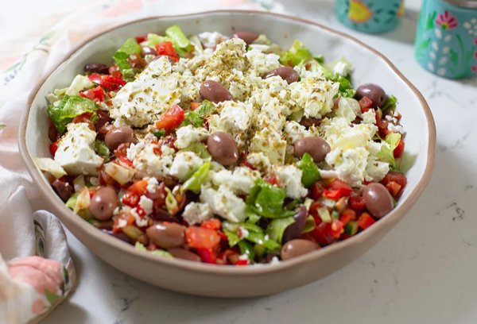

סלט יווני קלאסי
מאת רבקה עמאר · 10 דקות · 4 מנות
מצרכים
- 4 עגבניות גדולות קצוצות לחתיכות
- 1 חסה גדולה קצוצה
- 1/2 כוסית זיתים שחורים
- 250 גרם גבינת פטה קצוצה לקוביות
- 1 בצל אדום קטן קצוץ דק
- 1/3 כוס שמן זית
- 2 כפות חומץ יוני או חומץ לבן
- 1 כפית אורגנו יבש
- מלח ופלפל שחור לטעם
הוראות הכנה
- קוצצים את החסה וההעגבניות ומניחים בקערה גדולה.
- מוסיפים את הבצל האדום, הזיתים ופטה.
- בקערה קטנה מערבבים שמן זית, חומץ, אורגנו, מלח ופלפל.
- שופכים את הרוטב על הסלט ומערבבים בעדינות.
- מגישים בחוזרה כמו שהוא, או מוקד למשך 30 דקות להטמעת הטעמים.